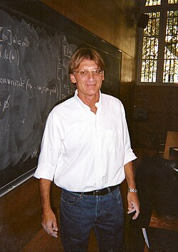

Pierre-Louis Lions | |
|---|---|
 Lions in 2005 | |
| Born | 11 August 1956 |
| Education | Lycée Louis-le-Grand |
| Alma mater | École normale supérieure Pierre and Marie Curie University |
| Known for | Nonlinear partial differential equations Mean field game theory Viscosity solution |
| Awards | ICM Speaker (1983, 1990, 1994) Peccot Lecture (1983) Prix Paul Doistau–Émile Blutet (1986) Ampère Prize (1992) Fields Medal (1994) |
| Scientific career | |
| Fields | Mathematics |
| Institutions | Collège de France École Polytechnique University of Paris-Dauphine |
| Thesis | Sur quelques classes d'équations aux dérivées partielles non linéaires et leur résolution numérique (1979) |
| Haïm Brezis | |
Doctoral students | María J. Esteban Olivier Guéant Gilles Motet Benoit Perthame Nader Masmoudi Cédric Villani |
{kind=link}
Pierre-Louis Lions (French: [ljɔ̃ːs];[1] born 11 August 1956) is a French mathematician. He is known for a number of contributions to the fields of partial differential equations and the calculus of variations. He was a recipient of the 1994 Fields Medal.
Biography
Lions entered the École normale supérieure in 1975, and received his doctorate from the University of Pierre and Marie Curie in 1979.[2] He holds the position of Professor of Partial differential equations and their applications at the Collège de France in Paris as well as a position at École Polytechnique.[3][4] Since 2014, he has also been a visiting professor at the University of Chicago.[5]
In 1979, Lions married Lila Laurenti, with whom he has one son. Lions' parents were Andrée Olivier and the renowned mathematician Jacques-Louis Lions, at the time a professor at the University of Nancy.
Awards and honors
In 1994, while working at the Paris Dauphine University, Lions received the International Mathematical Union's prestigious Fields Medal. He was cited for his contributions to viscosity solutions, the Boltzmann equation, and the calculus of variations. He has also received the French Academy of Sciences' Prix Paul Doistau–Émile Blutet (in 1986) and Ampère Prize (in 1992).
He was an invited professor at the Conservatoire national des arts et métiers (2000).[6] He is a doctor honoris causa of Heriot-Watt University[7] (Edinburgh), EPFL (2010),[8] Narvik University College (2014), and of the City University of Hong-Kong and is listed as an ISI highly cited researcher.[9]
Mathematical work
Operator theory
Lions' earliest work dealt with the functional analysis of Hilbert spaces. His first published article, in 1977, was a contribution to the vast literature on convergence of certain iterative algorithms to fixed points of a given nonexpansive self-map of a closed convex subset of Hilbert space.[L77][10] In collaboration with his thesis advisor Haïm Brézis, Lions gave new results about maximal monotone operators in Hilbert space, proving one of the first convergence results for Bernard Martinet and R. Tyrrell Rockafellar's proximal point algorithm.[BL78][11] In the time since, there have been a large number of modifications and improvements of such results.[12]
With Bertrand Mercier, Lions proposed a "forward-backward splitting algorithm" for finding a zero of the sum of two maximal monotone operators.[LM79] Their algorithm can be viewed as an abstract version of the well-known Douglas−Rachford and Peaceman−Rachford numerical algorithms for computation of solutions to parabolic partial differential equations. The Lions−Mercier algorithms and their proof of convergence have been particularly influential in the literature on operator theory and its applications to numerical analysis. A similar method was studied at the same time by Gregory Passty.[13][11]
Calculus of variations
The mathematical study of the steady-state Schrödinger–Newton equation, also called the Choquard equation, was initiated in a seminal article of Elliott Lieb.[14] It is inspired by plasma physics via a standard approximation technique in quantum chemistry. Lions showed that one could apply standard methods such as the mountain pass theorem, together with some technical work of Walter Strauss, in order to show that a generalized steady-state Schrödinger–Newton equation with a radially symmetric generalization of the gravitational potential is necessarily solvable by a radially symmetric function.[L80]
The partial differential equation
has received a great deal of attention in the mathematical literature. Lions' extensive work on this equation is concerned with the existence of rotationally symmetric solutions as well as estimates and existence for boundary value problems of various type.[L82a] In the interest of studying solutions on all of Euclidean space, where standard compactness theory does not apply, Lions established a number of compactness results for functions with symmetry.[L82b] With Henri Berestycki and Lambertus Peletier, Lions used standard ODE shooting methods to directly study the existence of rotationally symmetric solutions.[BLP81] However, sharper results were obtained two years later by Berestycki and Lions by variational methods. They considered the solutions of the equation as rescalings of minima of a constrained optimization problem, based upon a modified Dirichlet energy. Making use of the Schwarz symmetrization, there exists a minimizing sequence for the infimization problem which consists of positive and rotationally symmetric functions. So they were able to show that there is a minimum which is also rotationally symmetric and nonnegative.[BL83a] By adapting the critical point methods of Felix Browder, Paul Rabinowitz, and others, Berestycki and Lions also demonstrated the existence of infinitely many (not always positive) radially symmetric solutions to the PDE.[BL83b] Maria Esteban and Lions investigated the nonexistence of solutions in a number of unbounded domains with Dirichlet boundary data.[EL82] Their basic tool is a Pohozaev-type identity, as previously reworked by Berestycki and Lions.[BL83a] They showed that such identities can be effectively used with Nachman Aronszajn's unique continuation theorem to obtain the triviality of solutions under some general conditions.[15] Significant "a priori" estimates for solutions were found by Lions in collaboration with Djairo Guedes de Figueiredo and Roger Nussbaum.[FLN82]
In more general settings, Lions introduced the "concentration-compactness principle", which characterizes when minimizing sequences of functionals may fail to subsequentially converge. His first work dealt with the case of translation-invariance, with applications to several problems of applied mathematics, including the Choquard equation.[L84a] He was also able to extend parts of his work with Berestycki to settings without any rotational symmetry.[L84b] By making use of Abbas Bahri's topological methods and min-max theory, Bahri and Lions were able to establish multiplicity results for these problems.[BL88] Lions also considered the problem of dilation invariance, with natural applications to optimizing functions for dilation-invariant functional inequalities such as the Sobolev inequality.[L85a] He was able to apply his methods to give a new perspective on previous works on geometric problems such as the Yamabe problem and harmonic maps.[L85b] With Thierry Cazenave, Lions applied his concentration-compactness results to establish orbital stability of certain symmetric solutions of nonlinear Schrödinger equations which admit variational interpretations and energy-conserving solutions.[CL82]
Transport and Boltzmann equations
In 1988, François Golse, Lions, Benoît Perthame, and Rémi Sentis studied the transport equation, which is a first-order linear partial differential equation.[GLPS88] They showed that if the first-order coefficients are randomly chosen according to some probability distribution, then the corresponding function values are distributed with regularity which is enhanced from the original probability distribution. These results were later extended by DiPerna, Lions, and Meyer.[DLM91] In the physical sense, such results, known as velocity-averaging lemmas, correspond to the fact that macroscopic observables have greater smoothness than their microscopic rules directly indicate. According to Cédric Villani, it is unknown if it is possible to instead use the explicit representation of solutions of the transport equation to derive these properties.[16]
The classical Picard–Lindelöf theorem deals with integral curves of Lipschitz-continuous vector fields. By viewing integral curves as characteristic curves for a transport equation in multiple dimensions, Lions and Ronald DiPerna initiated the broader study of integral curves of Sobolev vector fields.[DL89a] DiPerna and Lions' results on the transport equation were later extended by Luigi Ambrosio to the setting of bounded variation, and by Alessio Figalli to the context of stochastic processes.[17]
DiPerna and Lions were able to prove the global existence of solutions to the Boltzmann equation.[DL89b] Later, by applying the methods of Fourier integral operators, Lions established estimates for the Boltzmann collision operator, thereby finding compactness results for solutions of the Boltzmann equation.[L94] As a particular application of his compactness theory, he was able to show that solutions subsequentially converge at infinite time to Maxwell distributions.[16] DiPerna and Lions also established a similar result for the Maxwell−Vlasov equations.[DL89c][18]
Viscosity solutions
Michael Crandall and Lions introduced the notion of viscosity solution, which is a kind of generalized solution of Hamilton–Jacobi equations. Their definition is significant since they were able to establish a well-posedness theory in such a generalized context.[CL83] The basic theory of viscosity solutions was further worked out in collaboration with Lawrence Evans.[CEL84] Using a min-max quantity, Lions and Jean-Michel Lasry considered mollification of functions on Hilbert space which preserve analytic phenomena.[LL86] Their approximations are naturally applicable to Hamilton-Jacobi equations, by regularizing sub- or super-solutions. Using such techniques, Crandall and Lions extended their analysis of Hamilton-Jacobi equations to the infinite-dimensional case, proving a comparison principle and a corresponding uniqueness theorem.[CL85]
Crandall and Lions investigated the numerical analysis of their viscosity solutions, proving convergence results both for a finite difference scheme and artificial viscosity.[CL84]
The comparison principle underlying Crandall and Lions' notion of viscosity solution makes their definition naturally applicable to second-order elliptic partial differential equations, given the maximum principle.[19][IL90] Crandall, Ishii, and Lions' survey article on viscosity solutions for such equations has become a standard reference work.[CIL92]
Mean field games
With Jean-Michel Lasry, Lions has contributed to the development of mean-field game theory.[LL07]
Major publications
Articles.
| L77. | Pierre-Louis Lions. Approximation de points fixes de contractions. C. R. Acad. Sci. Paris Sér. A-B 284 (1977), no. 21, A1357–A1359.
|
| BL78. | H. Brézis and P.L. Lions. Produits infinis de résolvantes. Israel J. Math. 29 (1978), no. 4, 329–345. doi:10.1007/BF02761171
|
| LM79. | P.L. Lions and B. Mercier. Splitting algorithms for the sum of two nonlinear operators. SIAM J. Numer. Anal. 16 (1979), no. 6, 964–979. doi:10.1137/0716071
|
| L80. | P.L. Lions. The Choquard equation and related questions. Nonlinear Anal. 4 (1980), no. 6, 1063–1072. doi:10.1016/0362-546X(80)90016-4
|
| BLP81. | H. Berestycki, P.L. Lions, and L.A. Peletier. An ODE approach to the existence of positive solutions for semilinear problems in RN. Indiana Univ. Math. J. 30 (1981), no. 1, 141–157. doi:10.1512/iumj.1981.30.30012
|
| CL82. | T. Cazenave and P.-L. Lions. Orbital stability of standing waves for some nonlinear Schrödinger equations. Comm. Math. Phys. 85 (1982), no. 4, 549–561. doi:10.1007/bf01403504
|
| EL82. | M.J. Esteban and P.L. Lions. Existence and nonexistence results for semilinear elliptic problems in unbounded domains. Proc. Roy. Soc. Edinburgh Sect. A 93 (1982), no. 1-2, 1–14. doi:10.1017/S0308210500031607
|
| FLN82. | D.G. de Figueiredo, P.-L. Lions, and R.D. Nussbaum. A priori estimates and existence of positive solutions of semilinear elliptic equations. J. Math. Pures Appl. (9) 61 (1982), no. 1, 41–63. doi:10.1007/978-3-319-02856-9_11
|
| L82a. | P.L. Lions. On the existence of positive solutions of semilinear elliptic equations. SIAM Rev. 24 (1982), no. 4, 441–467. doi:10.1137/1024101
|
| L82b. | Pierre-Louis Lions. Symétrie et compacité dans les espaces de Sobolev. J. Functional Analysis 49 (1982), no. 3, 315–334. doi:10.1016/0022-1236(82)90072-6
|
| BL83a. | H. Berestycki and P.-L. Lions. Nonlinear scalar field equations. I. Arch. Rational Mech. Anal. 82 (1983), no. 4, 313–345. doi:10.1007/BF00250555
|
| BL83b. | H. Berestycki and P.-L. Lions. Nonlinear scalar field equations. II. Arch. Rational Mech. Anal. 82 (1983), no. 4, 347–375. doi:10.1007/BF00250556
|
| CL83. | Michael G. Crandall and Pierre-Louis Lions. Viscosity solutions of Hamilton-Jacobi equations. Trans. Amer. Math. Soc. 277 (1983), no. 1, 1–42. doi:10.1090/S0002-9947-1983-0690039-8
|
| CEL84. | M.G. Crandall, L.C. Evans, and P.-L. Lions. Some properties of viscosity solutions of Hamilton-Jacobi equations. Trans. Amer. Math. Soc. 282 (1984), no. 2, 487–502. doi:10.1090/S0002-9947-1984-0732102-X
|
| CL84. | M.G. Crandall and P.-L. Lions. Two approximations of solutions of Hamilton-Jacobi equations. Math. Comp. 43 (1984), no. 167, 1–19. doi:10.1090/S0025-5718-1984-0744921-8
|
| L84a. | P.-L. Lions. The concentration-compactness principle in the calculus of variations. The locally compact case. I. Ann. Inst. H. Poincaré Anal. Non Linéaire 1 (1984), no. 2, 109–145. doi:10.1016/S0294-1449(16)30428-0
|
| L84b. | P.-L. Lions. The concentration-compactness principle in the calculus of variations. The locally compact case. II. Ann. Inst. H. Poincaré Anal. Non Linéaire 1 (1984), no. 4, 223–283. doi:10.1016/S0294-1449(16)30422-X
|
| CL85. | Michael G. Crandall and Pierre-Louis Lions. Hamilton-Jacobi equations in infinite dimensions. I. Uniqueness of viscosity solutions. J. Funct. Anal. 62 (1985), no. 3, 379–396. doi:10.1016/0022-1236(85)90011-4
|
| L85a. | P.-L. Lions. The concentration-compactness principle in the calculus of variations. The limit case. I. Rev. Mat. Iberoamericana 1 (1985), no. 1, 145–201. doi:10.4171/RMI/6
|
| L85b. | P.-L. Lions. The concentration-compactness principle in the calculus of variations. The limit case. II. Rev. Mat. Iberoamericana 1 (1985), no. 2, 45–121. doi:10.4171/RMI/12
|
| LL86. | J.-M. Lasry and P.-L. Lions. A remark on regularization in Hilbert spaces. Israel J. Math. 55 (1986), no. 3, 257–266. doi:10.1007/BF02765025
|
| BL88. | A. Bahri and P.-L. Lions. Morse index of some min-max critical points. I. Application to multiplicity results. Comm. Pure Appl. Math. 41 (1988), no. 8, 1027–1037. doi:10.1002/cpa.3160410803
|
| GLPS88. | François Golse, Pierre-Louis Lions, Benoît Perthame, and Rémi Sentis. Regularity of the moments of the solution of a transport equation. J. Funct. Anal. 76 (1988), no. 1, 110–125. doi:10.1016/0022-1236(88)90051-1
|
| ATL89. | A. Alvino, G. Trombetti, and P.-L. Lions. On optimization problems with prescribed rearrangements. Nonlinear Anal. 13 (1989), no. 2, 185–220. doi:10.1016/0362-546X(89)90043-6
|
| DL89a. | R.J. DiPerna and P.L. Lions. Ordinary differential equations, transport theory and Sobolev spaces. Invent. Math. 98 (1989), no. 3, 511–547. doi:10.1007/BF01393835
|
| DL89b. | R.J. DiPerna and P.-L. Lions. On the Cauchy problem for Boltzmann equations: global existence and weak stability. Ann. of Math. (2) 130 (1989), no. 2, 321–366. doi:10.2307/1971423
|
| DL89c. | R.J. DiPerna and P.-L. Lions. Global weak solutions of Vlasov-Maxwell systems. Comm. Pure Appl. Math. 42 (1989), no. 6, 729–757. doi:10.1002/cpa.3160420603
|
| ATL90. | A. Alvino, G. Trombetti, and P.-L. Lions. Comparison results for elliptic and parabolic equations via Schwarz symmetrization. Ann. Inst. H. Poincaré Anal. Non Linéaire 7 (1990), no. 2, 37–65. doi:10.1016/S0294-1449(16)30303-1
|
| IL90. | H. Ishii and P.-L. Lions. Viscosity solutions of fully nonlinear second-order elliptic partial differential equations. J. Differential Equations 83 (1990), no. 1, 26–78. doi:10.1016/0022-0396(90)90068-Z
|
| DLM91. | R.J. DiPerna, P.L. Lions, and Y. Meyer. Lp regularity of velocity averages. Ann. Inst. H. Poincaré Anal. Non Linéaire 8 (1991), no. 3-4, 271–287. doi:10.1016/s0294-1449(16)30264-5
|
| CIL92. | Michael G. Crandall, Hitoshi Ishii, and Pierre-Louis Lions. User's guide to viscosity solutions of second order partial differential equations. Bull. Amer. Math. Soc. (N.S.) 27 (1992), no. 1, 1–67. doi:10.1090/S0273-0979-1992-00266-5
|
| L94. | P.-L. Lions. Compactness in Boltzmann's equation via Fourier integral operators and applications. I. J. Math. Kyoto Univ. 34 (1994), no. 2, 391–427. doi:10.1215/kjm/1250519017
|
| LL06a. | Jean-Michel Lasry and Pierre-Louis Lions. Jeux à champ moyen. I. Le cas stationnaire. C. R. Math. Acad. Sci. Paris 343 (2006), no. 9, 619–625. doi:10.1016/j.crma.2006.09.019
|
| LL06b. | Jean-Michel Lasry and Pierre-Louis Lions. Jeux à champ moyen. II. Horizon fini et contrôle optimal. C. R. Math. Acad. Sci. Paris 343 (2006), no. 10, 679–684. doi:10.1016/j.crma.2006.09.018
|
| LL07. | Jean-Michel Lasry and Pierre-Louis Lions. Mean field games. Jpn. J. Math. 2 (2007), no. 1, 229–260. doi:10.1007/s11537-007-0657-8
|
| GLL11. | Olivier Guéant, Jean-Michel Lasry, and Pierre-Louis Lions. Mean field games and applications. Paris-Princeton Lectures on Mathematical Finance 2010, 205–266, Lecture Notes in Math., 2003, Springer, Berlin, 2011. doi:10.1007/978-3-642-14660-2_3
|
Textbooks.
| L82c. | Pierre-Louis Lions. Generalized solutions of Hamilton-Jacobi equations. Research Notes in Mathematics, 69. Pitman (Advanced Publishing Program), Boston, Mass.-London, 1982. iv+317 pp. ISBN 0-273-08556-5
|
| L96. | Pierre-Louis Lions. Mathematical topics in fluid mechanics. Vol. 1. Incompressible models. Oxford Lecture Series in Mathematics and its Applications, 3. Oxford Science Publications. The Clarendon Press, Oxford University Press, New York, 1996. xiv+237 pp. ISBN 0-19-851487-5
|
| L98a. | Pierre-Louis Lions. Mathematical topics in fluid mechanics. Vol. 2. Compressible models. Oxford Lecture Series in Mathematics and its Applications, 10. Oxford Science Publications. The Clarendon Press, Oxford University Press, New York, 1998. xiv+348 pp. ISBN 0-19-851488-3
|
| L98b. | Pierre-Louis Lions. On Euler equations and statistical physics. Cattedra Galileiana. Scuola Normale Superiore, Classe di Scienze, Pisa, 1998. vi+74 pp.
|
| CLL98. | Isabelle Catto, Claude Le Bris, and Pierre-Louis Lions. The mathematical theory of thermodynamic limits: Thomas-Fermi type models. Oxford Mathematical Monographs. The Clarendon Press, Oxford University Press, New York, 1998. xiv+277 pp. ISBN 0-19-850161-7
|
| CDLL19. | Pierre Cardaliaguet, François Delarue, Jean-Michel Lasry, and Pierre-Louis Lions. The master equation and the convergence problem in mean field games. Annals of Mathematics Studies, 201. Princeton University Press, Princeton, NJ, 2019. x+212 pp. ISBN 978-0-691-19071-6; 978-0-691-19070-9
|
See also
References
- ^ CORE Fields Medal Talk: Pierre-Louis Lions on Mean Field Games
- ^ "La Médaille Fields : 11 lauréats sur 44 sont issus de laboratoires français., Alain Connes" (PDF). www2.cnrs.fr. Retrieved 11 May 2010.
- ^ "Pierre-Louis Lions - Biographie" (in French). Collège de France. Retrieved 16 November 2020.
- ^ "Pierre-Louis Lions". University of Chicago. Retrieved 16 November 2020.
- ^ "Fields Medal". University of Chicago. Retrieved 16 November 2020.
- ^ Pierre-Louis Lions, « Analyse, modèles et simulations », Université de tous les savoirs, 4, 86-92, Éditions Odile Jacob, Paris, 2001.
- ^ Hoffmann, Ilire Hasani, Robert. "Academy of Europe: Lions Pierre-Louis". www.ae-info.org. Retrieved 2016-04-06.
{{cite web}}: CS1 maint: multiple names: authors list (link) - ^ Pousaz, Lionel (2010-11-10). "The "Magistrale" crowns the founder of Yahoo".
- ^ Thomson ISI, Lions, Pierre-Louis, ISI Highly Cited Researchers, archived from the original on 2006-03-04, retrieved 2009-06-20
- ^ Xu, Hong-Kun (2002). "Iterative algorithms for nonlinear operators". Journal of the London Mathematical Society. Second Series. 66 (1): 240–256. doi:10.1112/S0024610702003332. MR 1911872. S2CID 122667025. Zbl 1013.47032.
- ^ a b Eckstein, Jonathan; Bertsekas, Dimitri P. (1992). "On the Douglas–Rachford splitting method and the proximal point algorithm for maximal monotone operators". Mathematical Programming. Series A. 55 (3): 293–318. CiteSeerX 10.1.1.85.9701. doi:10.1007/BF01581204. MR 1168183. S2CID 15551627. Zbl 0765.90073.
- ^ Solodov, M. V.; Svaiter, B. F. (2000). "Forcing strong convergence of proximal point iterations in a Hilbert space". Mathematical Programming. Series A. 87 (1): 189–202. doi:10.1007/s101079900113. MR 1734665. S2CID 106476. Zbl 0387.47038.
- ^ Passty, Gregory B. (1979). "Ergodic convergence to a zero of the sum of monotone operators in Hilbert space". Journal of Mathematical Analysis and Applications. 72 (2): 383–390. doi:10.1016/0022-247X(79)90234-8. MR 0559375. Zbl 0428.47039.
- ^ Elliott H. Lieb. Existence and uniqueness of the minimizing solution of Choquard's nonlinear equation. Studies in Appl. Math. 57 (1976/77), no. 2, 93–105.
- ^ N. Aronszajn. A unique continuation theorem for solutions of elliptic partial differential equations or inequalities of second order. J. Math. Pures Appl. (9) 36 (1957), 235–249.
- ^ a b Villani, Cédric (2002). "A review of mathematical topics in collisional kinetic theory". In Friedlander, S.; Serre, D. (eds.). Handbook of mathematical fluid dynamics, Vol. I. Handbook of Mathematical Fluid Dynamics. Vol. 1. Amsterdam: North-Holland. pp. 71–305. doi:10.1016/S1874-5792(02)80004-0. ISBN 0-444-50330-7. MR 1942465. S2CID 117660436. Zbl 1170.82369.
- ^ Bogachev, Vladimir I.; Krylov, Nicolai V.; Röckner, Michael; Shaposhnikov, Stanislav V. (2015). Fokker–Planck–Kolmogorov equations. Mathematical Surveys and Monographs. Vol. 207. Providence, RI: American Mathematical Society. doi:10.1090/surv/207. ISBN 978-1-4704-2558-6. MR 3443169. Zbl 1342.35002.
- ^ Glassey, Robert T. (1996). The Cauchy problem in kinetic theory. Philadelphia, PA: Society for Industrial and Applied Mathematics. doi:10.1137/1.9781611971477. ISBN 0-89871-367-6. MR 1379589. Zbl 0858.76001.
- ^ Hitoshi Ishii. On uniqueness and existence of viscosity solutions of fully nonlinear second-order elliptic PDEs. Comm. Pure Appl. Math. 42 (1989), no. 1, 15–45.
External links
 Media related to Pierre-Louis Lions at Wikimedia Commons
Media related to Pierre-Louis Lions at Wikimedia Commons- College de France his resume at the Collège de France website (in French)
- O'Connor, John J.; Robertson, Edmund F., "Pierre-Louis Lions", MacTutor History of Mathematics Archive, University of St Andrews
- Pierre-Louis Lions at the Mathematics Genealogy Project
- Pierre-Louis Lions's results at International Mathematical Olympiad